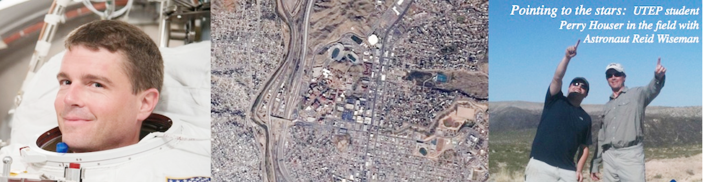

ABSTRACTS
6. Kejriwal, M., Pierce, S.A, Houser, P. Peckham, S.D., and Stanko, Z. (2017). Semi-automatic Data Integration using Karma. AGU Fall Meeting Abstracts, 2017, IN13A-18778.5. Olgin, J., Güereque, M., Pennington, D., Everett, A., Dixon, J., Reyes, A., Houser, P., Baker, J., Stocks, E., & Ellins, K. (2015). Earthtech, Dig-Texas and Upward Bound: Outreach to At-Risk Students with Interdisciplinary STEM Activities. AGU Fall Meeting Abstracts, 2015, ED43D-0892.
4. Royo, M., Houser, P.I., Munoz, R., Estrada. E., Villanueva, N., Pennington, D., (2015), Towards Semantically Integrating Data to Enhance a Field Trip Experience. CAHSI.
3. Smith-Konter, B. and Houser P., (2009) Communicating, visualizing, and publicizing EarthScope data and model products using Active Earth kiosks. Geological Society of America Abstracts with Programs, Vol. 41, No. 7, 598.
2. Goswami, S., Gamon, J. A., Houser,P., Matharasi, K., and Tweedie, C. E., (2007), Hyperspectral Study of the Arctic Tundra Ecosystem Using an Automated Robotic Cart System. American Geophysical Union.
1. Goswami, S., Gamon, J. A., Houser, P., Matharasi, K., and Tweedie, C. E., (2007), Diurnal Variability of Reflectance Properties of Arctic Tundra Vegetation and its Effect on Computed. American Geophysical Union.
BOOKS
1. Houser, N.P., Houser, P.I. (2000) “Images of Ysleta del Sur”. Ysleta Del Sur Pueblo, Ysleta, TX. ISBN 0-944551-53-4CONFERENCE TALKS
2. (2017) National Security Studies Institute-ANS Conference, Panel: Student Research Showcase-Novel Perspectives on Intelligence and National Security Research. Talk titled: “Ontological Applications into the use of Commercial Satellite Imagery for Selected Military and Intelligence Capabilities over North Korea”.1. (2016) ESRI User Conference (UC), Session Title: Mapping Geomorphic Surfaces. Title: Semantic and Visualization Methods Applied to Geologic Field Mapping. Paper #: 1866.
CONFERENCE POSTERS
9. (2018) Houser, P., Pennington, D., and Villanueva-Rosales, N. (2018). Situational Awareness Applied to Geologic Mapping Using Integration of Semantic Data and Visualization Techniques. AGU Fall Meeting Abstracts, 2018, IN43C-0917B.8. (2015) Houser, P., Royo-Leon, M., Munoz, R., Estrada, E., Villanueva-Rosales, N., and Pennington, D. Semantic Data and Visualization Techniques Applied to Geologic Field Mapping. AGU Fall Meeting Abstracts, 2015, IN53A-1829.
7. (2012) Houser, P., and Smith-Konter, B. R. University of Texas at El Paso, Geological Sciences Colloquium, poster titled: EarthScope Active Earth Kiosk Display Offers a Dynamic Digital Scientific Exhibit for Museums and Educational Centers. Program and Abstracts, Vol. 25.
6. (2011) Houser. P., and Hurtado, J., Geological Sciences Colloquium, poster titled: Advanced Applications of Mobile Computing and Augmented Reality for Field Geology. Program and Abstracts, Vol. 24.
5. (2011) Houser. P., and Hurtado, J., Presented Poster at the 42nd Lunar and Planetary Science Conference, Year of the Solar System (LPSC-YSS) in Woodlands, TX. titled: Advanced Applications of Mobile Computing and Augmented Reality for Field Geology.
4. (2010) Houser. P., and Hurtado, J., Presented research poster at the Geologic Society of America in Denver, Co. titled: Advanced Applications ofMobile Computing and Augmented Reality for Field Geology. GSA Abstracts with Programs Vol. 42, No. 5, p. 301.
3. (2010) Houser, P., and Smith-Konter, B. R. Presented poster at IRIS workshop titled: EarthScope Active Earth Kiosk Display Offers a Dynamic Digital Scientific Exhibit for Museums and Educational Centers. Incorporated Research Institutions for Seismology (IRIS) Workshop, Snowbird, UT.
2. (2010) Houser. P., and Smith-Konter, B. R. University of Texas at El Paso, Geological Sciences Colloquium, poster titled: Customized EarthScopeActive Earth Kiosk Display for Museums and Educational Centers. Program and Abstracts, Vol. 24, p 35.
1. (2009) Presented poster at GSA. Houser, P., and Smith-Konter, B.R., titled: Shaping education with technology: EarthScope Active Earth Kiosk Creates an Interactive Medium for Exploring Dynamic Geological Settings. Geological Society of America Abstracts with Programs, Vol. 41, No. 7, 92, Portland, Oregon.
EXHIBITS
8. Houser, N.P., Houser, P.I. (2018) “Living Legacy of the Oldest Texas Community”. Ysleta del Sur Pueblo Cultural Center, Department of Cultural Preservation.7. Houser, N.P., Houser, P.I. (2015) “Mission Heritage Exhibit”. Ysleta del Sur Pueblo Cultural Center, Ysleta, TX.Funded by the MICA Group, Cultural Resources Fund, and Tribal Funds.
6. Houser, N.P., Houser, P.I. (2011) “Settlement Legacy Native Americans of the Pass of the North”. El Paso Museum of the Archaeology, El Paso, TX.
5. Houser, P., Smith-Konter, B.(2009) Three IRIS Interactive kiosk Exhibits: UTEP Centennial Museum, El Paso Insights Museum, and Hueco Tanks State Park Visitor’s Center.
4. Houser, N.P., Houser, P.I. (2007) “San Elizario Salt War”. El Paso Museum of History, El Paso, TX.
3. Houser, N.P., Houser, P.I. (2006) Tigua Trials Online Exhibit.
2. Houser, N.P., Houser, P.I. (2002) Path of the Padres. El Paso International Airport, El Paso, TX.
1. Houser, N.P., Houser, P.I. (2001) “San Elizario Through the Centuries”. Los Portales Center, San Elizario, TX.
WEBSITES (selected)
• MatriARC PROJECTion (2021)• El Paso Geological Society (2021)
• Tigua Trials (2006)